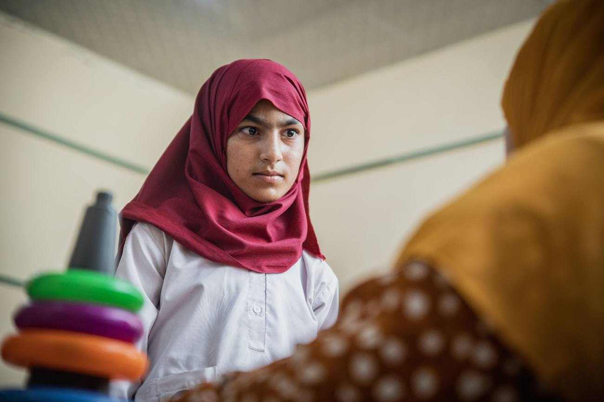

Programmes
Programmes
What we run, where, and what each one is measured on. Programme figures are published on this site as each programme completes its endline — not before.
Flagship programme · Pakistan
Maahwari
Healthy menstrual hygiene management through eco-friendly products — delivered as product, education and follow-up together, because the first without the other two does not change anything.

A period is a recurring, predictable interruption to education — and one of the few that is entirely solvable
The problem
Menstruation removes girls and women from school, work and public life on a predictable monthly cycle. The causes are not mysterious: no access to a safe product, nowhere private to change it, no water to wash, and a silence around the subject that makes asking for help costly.
The environmental half of the problem is less discussed. Disposable products are, by design, a single-use plastic stream — in places with no waste collection, they are burned or buried at the household. A solution that fixes access by adding to that stream has solved one problem by creating another.
What Maahwari does
Maahwari is a distribution and education programme. We supply eco-friendly, reusable menstrual products and deliver structured health education alongside them, then follow up to find out whether the products are actually still in use months later.
That follow-up is the part that distinguishes the programme. Reusable products only displace waste if people continue to use them, and continued use depends on things that have nothing to do with the product — whether there is water to wash it, somewhere private to dry it, and whether the household accepts it. We measure the reuse rate rather than assuming it.
How it is delivered
- Through local partner organisations and schools with existing standing in the community
- Product and education delivered in the same session, never separately
- Sessions run by locally recruited women, in the local language
- Engagement with mothers and teachers, not only with participants
- Follow-up at a fixed interval after distribution
What we measure
- Sustained access — proportion still using the product at follow-up
- School days retained per participant per cycle, against baseline
- Health-literacy score, intake versus endline on a fixed instrument
- Reported activity restriction during menstruation
- Single-use waste displaced, modelled on verified product lifespan and observed reuse
Maahwari is a delivery and education programme, not a product business. We do not sell menstrual products commercially.
Maahwari — programme record
| Indicator | SDG target | Instrument | Status |
|---|---|---|---|
| Sustained access at follow-up | 6.2 | Follow-up survey, fixed interval | In field |
| School days retained per cycle | 4.1 / 4.5 | Attendance record + participant recall | In field |
| Health-literacy change | 3.7 | Pre/post instrument, identical items | In field |
| Activity restriction reported | 5.1 | Participant survey | In field |
| Single-use waste displaced | 12.5 | Modelled on observed reuse rate | Method published |
Figures are published on the Evidence page once endline is complete and the verification pack is assembled. We do not publish interim numbers.
Programme area · Pakistan
Climate resilience
& community health
Pakistan is among the countries most exposed to climate hazard and least resourced to absorb it. Flood, heat and water stress arrive as a health and hygiene emergency long before they arrive as a policy problem.
Where we work in this area
- Hygiene and water provision inside the first 30 days of a flood response
- Restoring menstrual and sanitation access in displacement conditions
- Heat and water-stress adaptation for households outside the formal service network
- Preparedness work with local partners between events, not only during them
The design constraint
Emergency response and long-term programming are usually run by different organisations on different timescales, and the handover between them is where people fall through. We design the response so that what is set up in week one is the thing that continues in month six.
The measured indicator for this area is households reached with hygiene and water provision inside the first 30 days — mapped to SDG target 13.1.
Programme area · For institutions
Delivery capability
programmes
Commissioned by institutions that hold a social or environmental mandate and want the delivery and measurement capability to sit inside their own organisation afterwards.